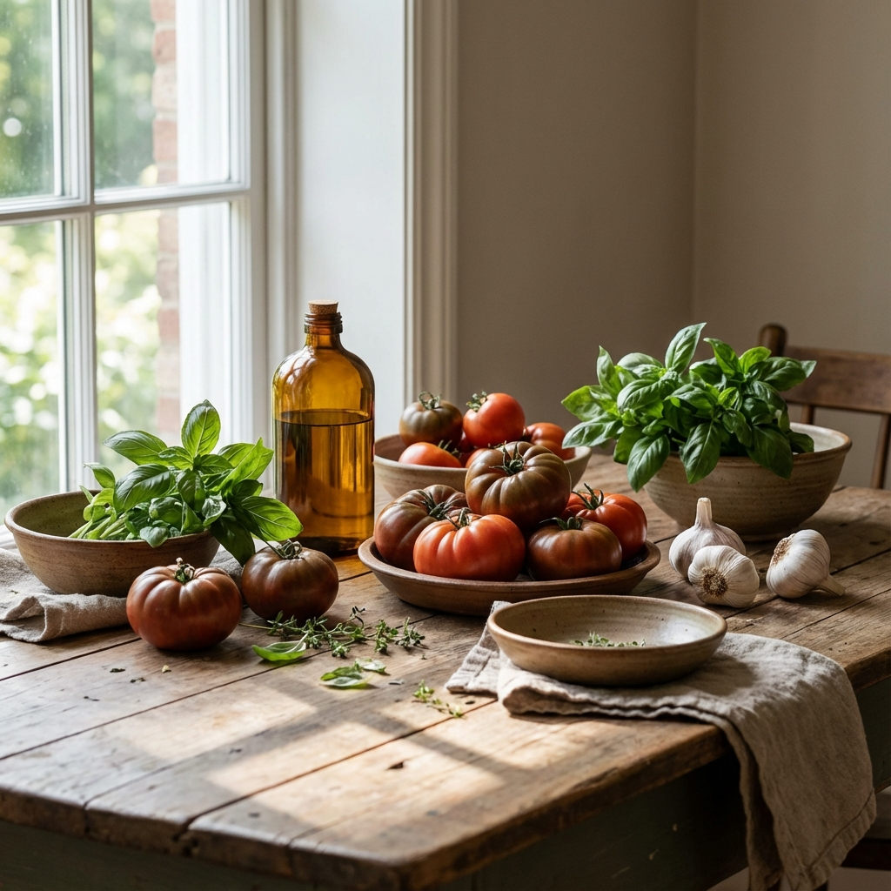
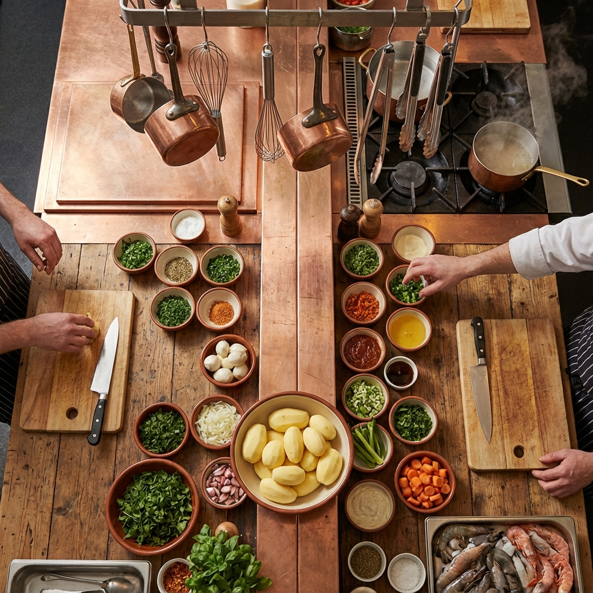

Consultoría gastronómica internacional basada en experiencia real, respeto por el producto y ejecución impecable.
Solicitar una conversaciónHe trabajado en cocinas y proyectos gastronómicos en Venezuela, Argentina, España e Irlanda, colaborando con equipos, marcas y conceptos que entienden la cocina como un oficio serio, no como una moda.
Cada lugar me dejó una enseñanza distinta.
Todas forman parte del mismo lenguaje.

Consultoría gastronómica para proyectos que quieren durar.
Trabajo con restaurantes, grupos gastronómicos y emprendedores que buscan claridad antes de crecer, estructura antes de escalar y coherencia antes de abrir.
Definición clara de identidad, propuesta y narrativa culinaria.
Menús pensados para el cliente, el equipo y la operación.
Desde la idea hasta el primer servicio.
Orden, repetibilidad y control sin perder alma.
Para proyectos que necesitan dirección, no ruido.

Un proceso simple, honesto y enfocado en resultados.
Escuchar, observar y entender antes de proponer.
Definir el camino correcto para el proyecto, no el más rápido.
Trabajo cercano con equipos y responsables.
La cocina se afina en la práctica, no en el papel.
La gastronomía no se trata solo de platos.
Se trata de decisiones.
Decisiones sobre producto, técnica, tiempos, personas y territorio.
Cuando esas decisiones están alineadas, el resultado se siente.
No busco imponer un estilo.
Busco revelar el que ya existe, hacerlo más claro y llevarlo a su mejor versión.
Soy Kike Mujica, cocinero y consultor gastronómico venezolano.
Mi camino me ha llevado por cocinas y proyectos en distintos países, siempre con la misma premisa: respeto por el oficio, atención al detalle y compromiso con el trabajo bien hecho.
Venezuela sigue siendo el punto de partida.
El mundo, el contexto.
Ya sea una consulta inicial o un proyecto completo, me interesa conocer tu visión.